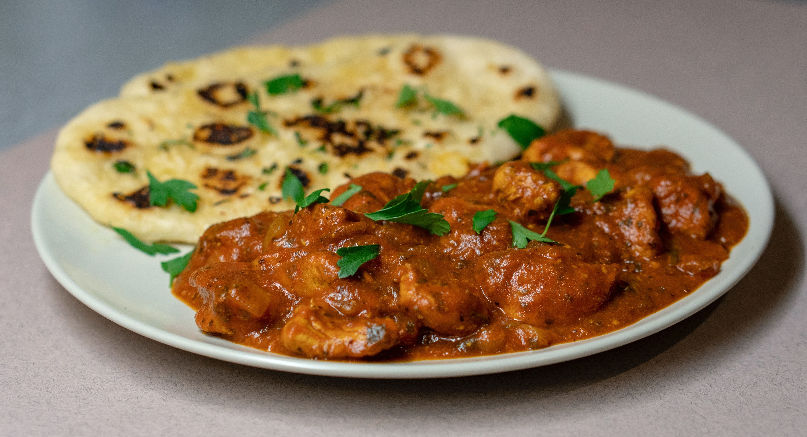

Paneer Tikka Masala
A delicious and flavorful dish featuring marinated paneer pieces cooked in a creamy and spiced tomato sauce.
Ingredients:
- 250g paneer, cubed
- 1 cup yogurt
- 2 tomatoes, pureed
- 1 onion, finely chopped
- 1 tablespoon ginger-garlic paste
- 1 tablespoon tikka masala
- 1 teaspoon red chili powder
- 1 teaspoon garam masala
- Salt to taste
- Fresh coriander for garnish